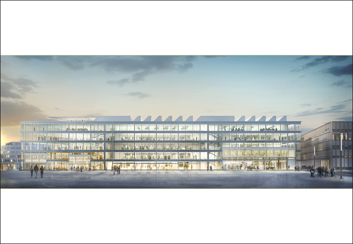

Project: INNOCAMPUS BIEL/BIENNE, 3rd prize



Project: INNOCAMPUS BIEL/BIENNE, 3rd prize
Location: Biel/Bienne (BE)
Customer: Switzerland Innovationspark Biel/Bienne, Innocampus AG, Nidau-Biel
Program: Laboratories, offices, production halls, auditorium, café
Budget: 38’000’000 CHF
Date: 2016
Type: Open competition, 3rd prize
Team: NYX architectes, Basler Hoffmann AG Zürich (civil engineer), TPAG AG, Biel (MEP engineer), Prona AG, Biel (Energie), ARO Plan AG, Oberägeri (Laborplaning)
Images: Play-Time